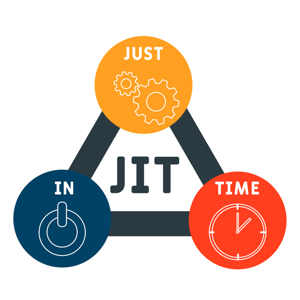

Herramientas de gestión del Capital Humano que empleamos
Implementación de las 5's en nuestra empresa
Las 5's
-
Seiton 整頓 (Orden)
Estructura de Proyecto:- Adoptar una convención de nomenclatura consistente para carpetas, archivos y clases.
- Utilizar un sistema de control de versiones como Git para organizar y rastrear cambios en el código.
- Estandarizar la ubicación de archivos de configuración, bibliotecas y dependencias.
- Implementar un sistema de organización para escritorios físicos y virtuales, utilizando herramientas como organizadores de escritorio o software de gestión de tareas.
- Minimizar objetos personales y elementos no esenciales en el espacio de trabajo.
- Establecer áreas designadas para documentos, equipos y materiales de trabajo.
-
Seiketsu 清潔 (Estandarización)
Guías y políticas:- Documentar y estandarizar procesos de desarrollo, pruebas y despliegue utilizando manuales o wikis internos.
- Definir roles y responsabilidades claros para cada miembro del equipo.
- Establecer métricas para el seguimiento del progreso y la calidad del software.
- Crear y mantener documentación clara y actualizada del código, incluyendo comentarios, diagramas y casos de uso.
- Establecer una convención de nomenclatura consistente para variables, funciones y clases.
- Utilizar herramientas de documentación de código como Doxygen o Sphinx.
-
Seiri 整理 (Clasificación)
Clasificación de documentos:- Implementar un sistema de archivo digital con carpetas categorizadas para documentos antiguos, versiones de software, etc.
- Eliminar o archivar de forma segura documentos obsoletos o innecesarios.
- Establecer un ciclo de revisión periódico para eliminar documentos antiguos.
- Identificar y eliminar funciones o módulos de código no utilizados mediante herramientas de análisis estático.
- Implementar revisiones de código regulares para detectar y eliminar código innecesario.
- Documentar las razones para eliminar código para futuras referencias.
-
Seisō 清掃 (Limpieza)
Limpieza de estaciones de trabajo:- Establecer un programa de limpieza regular para equipos de trabajo y áreas comunes, incluyendo teclados, monitores, escritorios y zonas de descanso.
- Implementar un sistema de eliminación de residuos eficiente y responsable.
- Fomentar la limpieza individual y la responsabilidad por el mantenimiento del espacio de trabajo.
- Establecer pautas de estilo de código y realizar revisiones de código regulares para garantizar la legibilidad, mantenibilidad y eficiencia del código.
- Utilizar herramientas de análisis de código para identificar y corregir errores, problemas de rendimiento y código duplicado.
- Implementar un sistema de seguimiento de errores para gestionar y corregir problemas de manera eficiente.
-
Shitsuke しつけ (Disciplina)
Capacitación continua:- Brindar capacitación regular al equipo sobre las prácticas de las 5S y su importancia en el desarrollo de software.
- Fomentar la participación activa del equipo en la mejora continua de los procesos.
- Utilizar herramientas de aprendizaje en línea, talleres y seminarios para mantener actualizado al equipo.
- Implementar auditorías internas regulares para verificar el cumplimiento de las prácticas de las 5S.
- Identificar áreas de mejora y establecer planes de acción para corregir problemas.
- Reconocer y recompensar al equipo por sus esfuerzos en mantener un ambiente de trabajo organizado y eficiente.
Implementación del Just in Time en nuestra empresa
Debido a que nuestro proyecto busca proporcionar una solución innovadora y automatizada en el proceso de compras en cafeterías y restaurantes estudiantiles al realziar pagos con tarjetas o carteras digitales, la implementación de la herramienta Just in time (JIT) puede ser fundamental para optimizar y mejorar la eficiencia de los procesos de pago.
- Proposito general: Implementar una solución de pago automatizada y eficiente que minimice los tiempos de espera y mejore la experiencia del cliente en cafeterías y restaurantes estudiantiles, utilizando tecnologías modernas y seguras como pagos con tarjetas y carteras digitales.
-
Función o funciones clave:
- Automatización del proceso de pago.
- Seguridad y confianza de las transacciones.
- Optimización del tiempo de espera para el cliente.
-
Subfunción o función principal:
Automatización del proceso de pago
- Implementar sistemas de pago sin contacto (contactless) y carteras digitales.
- Integrar terminales de pago que procesen las transacciones en tiempo real.
- Unidad de competencia: Optimización y automatización del proceso de pago en restaurantes y cafeterías estudiantiles.
-
Elementos de competencia:
-
Procesamiento rápido y seguro de pagos.
- Instalación de terminales y sistemas de pago modernos, asegurando su funcionamiento ininterrumpido.
- Implementar protocolos de seguridad avanzados como el cifrado de datos y autenticación multifactor para proteger las transacciones.
-
Reducción de tiempos de espera
- Optmizar el sistema para que los pagos se procesen de manera instantánea, reduciendo el mínimo de tiempo que el cliente pasa en la caja.
- Implementar un sistema de notificaciones en tiempo real tanto para los clientes como para el personal, informando sobre el estado de su pedido.
-
Capacitación del personal
- Capacitar a todo el personar sobre el uso de los nuevos sistemas de pago.
- Asegurarnos que el personal esté preparado para manejar posibles problemas técnicos.
-
Mejora continua
- Recopilar y analizar datos sobre el desempeño del sistema de pagos para identificar áreas de mejora.
- Mantener nuestro sistema para que este actualizado con las últimas tecnologías y estándares de seguridad.
-
Procesamiento rápido y seguro de pagos.